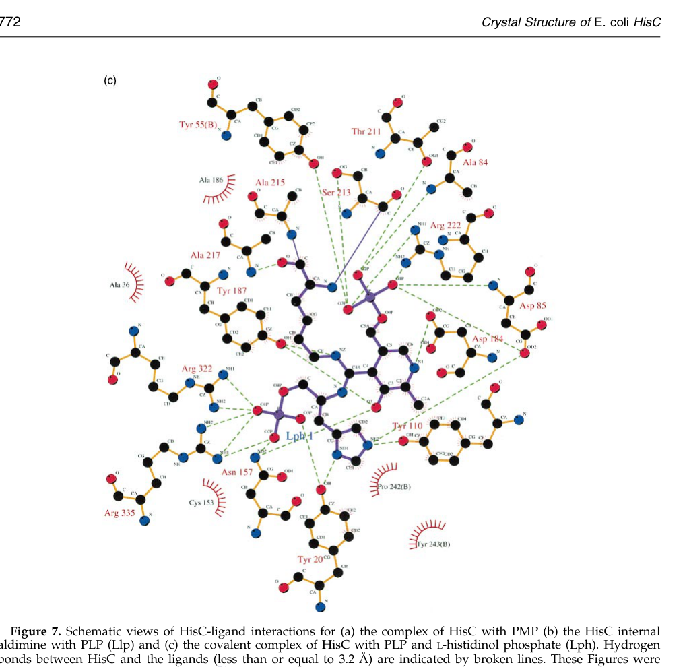

Histidinol-phosphate aminotransferase (HisC; EC 2.6.1.9), a cytosolic pyridoxal-5'-phosphate (PLP)-dependent class-II aminotransferase that catalyzes the seventh step of L-histidine biosynthesis. It transfers an amino group from L-glutamate to imidazole-acetol phosphate (3-(imidazol-4-yl)-2-oxopropyl phosphate), producing L-histidinol phosphate and 2-oxoglutarate. The enzyme functions as a homodimer with active sites at the dimer interface; PLP is covalently bound as an internal aldimine to an active-site lysine (Lys210 in this protein) and catalysis proceeds via a ping-pong mechanism through a pyridoxamine-5'-phosphate intermediate. In Pseudomonas putida KT2440 the gene (PP_0967) lies within a histidine-biosynthesis gene cluster. As in other bacterial homologs of this subfamily, the enzyme can show broadened substrate tolerance toward aromatic amino acids (e.g. tyrosine, phenylalanine) in vitro, but its physiological role is in histidine biosynthesis.
| GO Term | Evidence | Action | Reason |
|---|---|---|---|
|
GO:0000105
L-histidine biosynthetic process
|
IEA
GO_REF:0000120 |
ACCEPT |
Summary: HisC catalyzes the seventh step of histidine biosynthesis; this BP term is well supported by family/HAMAP-rule assignment, the UniProt pathway annotation, and operon context in KT2440.
Reason: Core biological process for this enzyme. The histidinol-phosphate aminotransferase function places it squarely in the L-histidine biosynthetic pathway (UniPathway UPA00031; HAMAP-Rule MF_01023).
|
|
GO:0004400
L-histidinol-phosphate:2-oxoglutarate transaminase activity
|
IEA
GO_REF:0000120 |
ACCEPT |
Summary: This is the specific molecular function of HisC (EC 2.6.1.9), transaminating L-histidinol phosphate with 2-oxoglutarate/L-glutamate. The UniProt CATALYTIC ACTIVITY block and HAMAP rule directly support this.
Reason: Represents the core molecular function. Strongly supported by family assignment (HisP_aminotrans subfamily, TIGR01141 hisC), Rhea:23744, and EC 2.6.1.9.
|
|
GO:0016740
transferase activity
|
IEA
GO_REF:0000002 |
MARK AS OVER ANNOTATED |
Summary: A high-level parent of the specific aminotransferase activity already annotated (GO:0004400). It is correct but uninformative given the more precise term.
Reason: Redundant generic ancestor of GO:0004400; adds no information beyond the specific transaminase MF term.
|
|
GO:0030170
pyridoxal phosphate binding
|
IEA
GO_REF:0000002 |
ACCEPT |
Summary: HisC is a PLP-dependent enzyme that covalently binds pyridoxal 5'-phosphate as an internal aldimine at the active-site lysine (MOD_RES 210 in this entry). Well supported by the COFACTOR annotation and conserved PLP-lysine motif.
Reason: PLP binding is an essential, well-supported molecular function of this enzyme. The PLP-lysine internal aldimine and ping-pong mechanism are documented for HisC homologs (see hisC-deep-research-falcon.md).
|
|
GO:0140385
amino acid transaminase activity
|
IEA
GO_REF:0000117 |
MARK AS OVER ANNOTATED |
Summary: A broad parent term covering aminotransferase activity on amino acid substrates. Correct but less specific than GO:0004400, which is already annotated.
Reason: Generic ancestor of the specific histidinol-phosphate transaminase activity; the more precise term GO:0004400 already captures this function.
|
The research report should be a detailed narrative explaining the function, biological processes, and localization of the gene product. Citations should be given for all claims.
You should prioritize authoritative reviews and primary scientific literature when conducting research. You can supplement
this with annotations you find in gene/protein databases, but these can be outdated or inaccurate.
We are specifically interested in the primary function of the gene - for enzymes, what reaction is catalyzed, and what is the substrate specificity? For transporters, what is the substrate? For structural proteins or adapters, what is the broader structural role? For signaling molecules, what is the role in the pathway.
We are interested in where in or outside the cell the gene product carries out its function.
We are also interested in the signaling or biochemical pathways in which the gene functions. We are less interested in broad pleiotropic effects, except where these elucidate the precise role.
Include evidence where possible. We are interested in both experimental evidence as well as inference from structure, evolution, or bioinformatic analysis. Precise studies should be prioritized over high-throughput, where available.
The Pseudomonas putida KT2440 gene hisC (annotated as PP_0967) encodes histidinol-phosphate aminotransferase (also called imidazole acetol-phosphate transaminase), an enzyme of histidine biosynthesis that catalyzes a pyridoxal-5′-phosphate (PLP)-dependent transamination step (EC 2.6.1.9). In KT2440, hisC is part of a histidine-biosynthesis gene cluster annotated hisGDC (PP_0965–PP_0967) and is supported as an operon by RT-PCR co-transcription assays (data referenced but not shown). Although KT2440 gene-level quantitative fitness for hisC was not found in the retrieved texts, histidine biosynthesis is conditionally essential for minimal-medium growth, and multiple other his genes yield histidine auxotrophy in a genome-wide mutant screen. The enzyme is expected to be cytosolic, consistent with its role in core amino-acid biosynthesis.
Target identity required by the prompt: UniProt Q88P86, gene hisC, locus PP_0967, organism P. putida KT2440.
Strain-specific verification from KT2440 literature: A genome-wide KT2440 study explicitly lists histidine-biosynthesis genes as organized into four clusters and identifies PP0965–PP0967 as the “hisGDC” cluster, placing PP_0967 as hisC within that cluster. The same source reports co-transcription assays indicating the clusters form independent operons, supporting operon organization for this region (molina‐henares2010identificationofconditionally pages 7-9). In parallel, an authoritative histidine-biosynthesis review defines HisC as histidinol aminotransferase with EC 2.6.1.9 (winkler2009biosynthesisofhistidine pages 46-47).
Limitations of verification: The tools in this run did not directly retrieve the UniProt record for Q88P86, so the UniProt accession-to-locus mapping is indirect (PP_0967 ↔ hisC) rather than confirmed by UniProt text in context.
Histidine is synthesized in bacteria via a conserved multi-step pathway; HisC performs a late aminotransferase step (often described as the 7th step in bacteria) in which an amino group is installed on the histidine precursor (sivaraman2001crystalstructureof pages 1-2, winkler2009biosynthesisofhistidine pages 12-13).
Primary biochemical role of HisC (EC 2.6.1.9):
- Amino donor: typically L-glutamate
- Amino acceptor: imidazole acetol-phosphate (also described as 3-(imidazol-4-yl)-2-oxo-propyl phosphate, or imidazoleacetol-phosphate)
- Products: L-histidinol phosphate + 2-oxoglutarate (α-ketoglutarate)
This reaction is explicitly described in structural/enzymology studies and reviews (sivaraman2001crystalstructureof pages 1-2, matte2003contributionofstructural pages 2-3, fernandez2004structuralstudiesof pages 1-2).
HisC is a PLP-dependent aminotransferase. Structural work shows the canonical PLP chemistry: PLP is covalently linked to an active-site lysine as an internal aldimine, cycles through pyridoxamine-5′-phosphate (PMP), and catalysis proceeds via a ping-pong (double-displacement) mechanism characteristic of aminotransferases (sivaraman2001crystalstructureof pages 1-2, sivaraman2001crystalstructureof pages 7-9, winkler2009biosynthesisofhistidine pages 12-13).
High-resolution crystallography on bacterial HisC (not KT2440-specific) provides mechanistic anchors useful for functional annotation:
- Oligomerization: HisC is dimeric, and the active sites lie at the dimer interface (sivaraman2001crystalstructureof pages 1-2, sivaraman2001crystalstructureof pages 7-9, sivaraman2001crystalstructureof pages 2-4).
- Active-site lysine: in E. coli HisC, Lys214 forms the internal aldimine with PLP (sivaraman2001crystalstructureof pages 13-14).
- Captured intermediates: structures include PLP internal aldimine, PMP state, and an unusual covalent tetrahedral/gem-diamine–like intermediate involving PLP + L-histidinol phosphate + active-site Lys, supporting the transimination mechanism (sivaraman2001crystalstructureof pages 1-2, matte2003contributionofstructural pages 2-3, winkler2009biosynthesisofhistidine pages 12-13).
- Conserved PLP-contact residues: residues such as Tyr55, Asn157, Asp184, Tyr187, Ser213, Lys214, Arg222 (numbering from E. coli) are described as conserved PLP-interacting positions (sivaraman2001crystalstructureof pages 1-2, matte2003contributionofstructural pages 2-3).
Image evidence: Sivaraman et al. provide figures schematizing (i) the covalent PLP–L-histidinol phosphate complex interactions and (ii) the transimination mechanism states (internal aldimine → gem-diamine intermediates → external aldimine), which directly support the mechanistic model (sivaraman2001crystalstructureof media 1b7db48c, sivaraman2001crystalstructureof media 8b8302fc).
In P. putida KT2440, histidine-biosynthesis genes are described as distributed in four genomic clusters, including PP0965–PP0967 (“hisGDC”). Co-transcription assays by RT-PCR are reported to show that the clusters form independent operons, supporting that PP_0965–PP_0967 are co-transcribed (molina‐henares2010identificationofconditionally pages 7-9).
A genome-wide KT2440 mutant-library screen on glucose minimal medium provides quantitative and phenotype-level evidence that histidine biosynthesis is crucial under nutrient limitation:
- Library size: 7,760 independent clones screened.
- Minimal-medium growth defects: 79 mutants unable to grow on glucose minimal medium.
- Unique genes implicated: 47 independent knockout genes mapped from those mutants.
- Histidine auxotroph-associated hits recovered include hisB (PP0289; 1 hit), hisF (PP0293; 2 hits), hisH (PP0290; 2 hits), and hisZ (PP4890; 1 hit) (molina‐henares2010identificationofconditionally pages 2-3).
Notably, hisC was not recovered as a mutant hit in that screen, despite being in a cluster predicted by in silico models to yield histidine auxotrophy (molina‐henares2010identificationofconditionally pages 7-9, molina‐henares2010identificationofconditionally pages 2-3). This is consistent with the broader point made by the authors that transposon mutagenesis screens can miss some predicted conditionally essential loci due to library coverage and gene organization effects (molina‐henares2010identificationofconditionally pages 2-3).
No retrieved KT2440 paper provided an explicit subcellular localization statement for HisC. Given HisC’s role in core amino-acid biosynthesis and the absence of any membrane/periplasmic context in the KT2440 evidence presented here, the most defensible statement from the present evidence base is that HisC functions in the intracellular (cytosolic) metabolic network that supplies histidine for translation and metabolism (sivaraman2001crystalstructureof pages 1-2, molina‐henares2010identificationofconditionally pages 2-3).
Direct biochemical kinetics for KT2440 HisC were not retrieved in this run. However, quantitative parameters from well-studied bacterial homologs provide a calibrated expectation for activity and specificity (with appropriate caution about species differences).
A hyperthermophilic HisC (tmHspAT) study reported kinetic constants (measured at 20°C) for multiple substrates:
- Histidinol phosphate (Hsp): Km 0.8 mM; kcat 2.8 min⁻¹; kcat/Km 3.5 min⁻¹·mM⁻¹
- Tyrosine: Km 2.3 mM; kcat 2.6 min⁻¹; kcat/Km 1.13
- Tryptophan: Km 3.4 mM; kcat 0.85 min⁻¹; kcat/Km 0.25
- Phenylalanine: Km 38.0 mM; kcat 0.52 min⁻¹; kcat/Km 0.014
The same study reports no measurable activity with L-histidine and notes temperature dependence with maximal activity above 60°C (fernandez2004structuralstudiesof pages 9-10).
These data illustrate a key annotation nuance: some HisC homologs can display broadened substrate ranges (e.g., aromatic amino acids), while still functioning in histidine biosynthesis (fernandez2004structuralstudiesof pages 1-2, fernandez2004structuralstudiesof pages 9-10).
UV–visible spectroscopy provides quantitative cofactor-state signatures:
- A peak around 327 nm (assigned to PMP form)
- Conversion to PLP internal aldimine yields peaks at 338 nm and 427 nm; addition of α-ketoglutarate drives this conversion, with an observed shift above 15 mM α-ketoglutarate (sivaraman2001crystalstructureof pages 7-9).
Reported measurements include:
- Dimer in solution, with dynamic light scattering Mr ≈ 60 kDa and monomer ≈ 40 kDa
- Dimer dimensions ≈ 94 × 55 × 54 Å
- PLP–PLP phosphate distance across the dimer: 22.6 Å
- Soaking concentration for L-histidinol phosphate in crystallography: 4 mM
- A PLP ring rotation ~20° and Lys movement ~1 Å upon covalent complex formation (sivaraman2001crystalstructureof pages 2-4, sivaraman2001crystalstructureof pages 9-10).
A 2024 mSystems paper demonstrates use of independent component analysis (ICA) on a large RB-TnSeq fitness compendium to identify “functional modules” (fModules) in P. putida KT2440 and links these to regulatory iModulons. The retrieved excerpt specifically notes histidine-related signals (e.g., hisA in a histidine/purine-related module and a “His metabolism” connection via HutC) as part of this modern data-driven annotation strategy (borchert2024machinelearninganalysis pages 11-13). While this excerpt does not provide hisC-specific values, it reflects a current trend: integrating high-throughput fitness and transcriptomics with machine learning to refine gene-function relationships.
A 2023 Science Advances study reports metabolic engineering and bioprocess development of P. putida KT2440 for lignin-related aromatic conversion to β-ketoadipic acid, achieving titers of 44.5 g/L (model LRCs) and 25 g/L (corn stover-derived LRCs), and predicted a minimum selling price of $2.01/kg (Werner et al., 2023; URL in retrieved metadata). This positions KT2440 as an industrially relevant chassis; although the retrieved text segments did not connect this directly to histidine biosynthesis, such chassis optimization depends on robust central metabolism including amino acid supply and PLP-dependent enzyme networks (paper metadata retrieved; no direct in-text hisC evidence found here).
While outside the KT2440 scope, recent microbiology frequently treats HisC and histidine biosynthesis as potential antimicrobial or host-adaptation nodes because humans lack de novo histidine biosynthesis. This supports the general relevance of accurate HisC functional annotation, but pathogen-specific claims should not be transferred to KT2440 without direct evidence.
Across authoritative reviews and structural enzymology, HisC is best described as a PLP-dependent aminotransferase that transfers the amino group from glutamate to imidazole acetol-phosphate, producing L-histidinol phosphate and α-ketoglutarate (sivaraman2001crystalstructureof pages 1-2, matte2003contributionofstructural pages 2-3, fernandez2004structuralstudiesof pages 1-2). This is the strongest functional basis for annotating PP_0967/Q88P86 as histidinol-phosphate aminotransferase.
KT2440 operon context (PP_0965–PP_0967 annotated as hisGDC; RT-PCR co-transcription) places PP_0967 within histidine biosynthesis at the genomic level (molina‐henares2010identificationofconditionally pages 7-9). However, currently retrieved KT2440 genetic screens did not directly yield a PP_0967/hisC mutant phenotype, so essentiality/auxotrophy for hisC remains an inference from pathway logic plus operon annotation rather than directly demonstrated in these sources (molina‐henares2010identificationofconditionally pages 2-3).
| Category | Key facts | Organism/Scope | Evidence source (with DOI URL and year) |
|---|---|---|---|
| Verified identity | User-specified target is hisC / PP_0967 / UniProt Q88P86 in Pseudomonas putida KT2440. KT2440 histidine-biosynthesis genes are organized in four clusters, and PP0965–PP0967 is annotated as the hisGDC cluster, placing PP_0967 as hisC in this strain-specific genomic context; this matches the expected role of histidinol-phosphate aminotransferase in histidine biosynthesis. Generic histidine-pathway references also identify HisC = histidinol aminotransferase, EC 2.6.1.9. (molina‐henares2010identificationofconditionally pages 7-9, winkler2009biosynthesisofhistidine pages 46-47) | P. putida KT2440 for locus/operon context; broad bacterial annotation for enzyme name/EC | Molina-Henares et al., 2010, Environmental Microbiology, DOI: https://doi.org/10.1111/j.1462-2920.2010.02166.x; Winkler & Ramos-Montañez, 2009, EcoSal Plus, DOI: https://doi.org/10.1128/ecosalplus.3.6.1.9 |
| Catalyzed reaction and pathway step | HisC (EC 2.6.1.9) catalyzes the 7th step of histidine biosynthesis: amino-group transfer from L-glutamate to imidazole acetol-phosphate / 3-(imidazol-4-yl)-2-oxo-propyl phosphate, producing L-histidinol phosphate and 2-oxoglutarate (α-ketoglutarate). The transferred amino group becomes the product’s α-amino group. (sivaraman2001crystalstructureof pages 1-2, matte2003contributionofstructural pages 2-3, winkler2009biosynthesisofhistidine pages 12-13, fernandez2004structuralstudiesof pages 1-2) | Broad bacterial HisC biochemistry and structural enzymology | Sivaraman et al., 2001, J. Mol. Biol., DOI: https://doi.org/10.1006/jmbi.2001.4882; Matte et al., 2003, J. Bacteriol., DOI: https://doi.org/10.1128/jb.185.14.3994-4002.2003; Winkler & Ramos-Montañez, 2009, EcoSal Plus, DOI: https://doi.org/10.1128/ecosalplus.3.6.1.9; Fernandez et al., 2004, J. Biol. Chem., DOI: https://doi.org/10.1074/jbc.m400291200 |
| Mechanistic/structural features | HisC is a PLP-dependent aminotransferase that follows a ping-pong (double-displacement) mechanism. Structural work shows a dimeric enzyme (~80 kDa total in E. coli), with each monomer containing a large PLP-binding domain, a smaller domain, and an N-terminal arm involved in dimerization/active-site shielding. The catalytic Lys214 (numbering from E. coli HisC) forms the internal aldimine with PLP; crystallography captured PMP, internal aldimine, and a covalent tetrahedral/gem-diamine-like intermediate with PLP and L-histidinol phosphate. Conserved PLP-interacting residues include Tyr55, Asn157, Asp184, Tyr187, Ser213, Lys214, Arg222. (sivaraman2001crystalstructureof pages 1-2, sivaraman2001crystalstructureof pages 7-9, matte2003contributionofstructural pages 2-3, winkler2009biosynthesisofhistidine pages 12-13, sivaraman2001crystalstructureof pages 13-14, fernandez2004structuralstudiesof pages 5-7, sivaraman2001crystalstructureof media 1b7db48c) | Broad bacterial HisC structural mechanism; residue numbering from E. coli and Thermotoga maritima homologs used for functional inference | Sivaraman et al., 2001, J. Mol. Biol., DOI: https://doi.org/10.1006/jmbi.2001.4882; Matte et al., 2003, J. Bacteriol., DOI: https://doi.org/10.1128/jb.185.14.3994-4002.2003; Fernandez et al., 2004, J. Biol. Chem., DOI: https://doi.org/10.1074/jbc.m400291200 |
| KT2440 genomic context / operon evidence | In P. putida KT2440, histidine biosynthesis genes occur in four genomic clusters. One cluster is PP0965–PP0967 (hisGDC), and RT-PCR evidence indicated these histidine clusters form independent operons, supporting that hisC/PP_0967 is cotranscribed with neighboring histidine-biosynthesis genes in this region. A separate monocistronic hisZ locus is PP4890. (molina‐henares2010identificationofconditionally pages 7-9) | P. putida KT2440 | Molina-Henares et al., 2010, Environmental Microbiology, DOI: https://doi.org/10.1111/j.1462-2920.2010.02166.x |
| KT2440 functional genomics / essentiality | In a genome-wide miniTn5 screen of 7,760 KT2440 mutants, 79 mutants failed to grow on glucose minimal medium, mapping to 47–48 conditionally essential genes; histidine auxotrophs were recovered, including hisB (PP0289), hisF (PP0293), hisH (PP0290), and hisZ (PP4890), but no hisC mutant was recovered, so this study supports histidine-pathway importance in minimal medium without direct knockout evidence for PP_0967. A 2024 RB-TnSeq/ICA reanalysis identified histidine-related functional modules (e.g., hisA in fModule_71, “His metabolism” connection to HutC iModulon), but the cited text provides no quantitative hisC-specific fitness value or essentiality call. (molina‐henares2010identificationofconditionally pages 11-12, molina‐henares2010identificationofconditionally pages 2-3, borchert2024machinelearninganalysis pages 11-13) | P. putida KT2440 functional genomics | Molina-Henares et al., 2010, Environmental Microbiology, DOI: https://doi.org/10.1111/j.1462-2920.2010.02166.x; Borchert et al., 2024, mSystems, DOI: https://doi.org/10.1128/msystems.00942-23 |
Table: This table consolidates strain-specific identity and operon evidence for PP_0967/hisC in Pseudomonas putida KT2440 with core biochemical and structural knowledge for HisC enzymes. It also distinguishes direct KT2440 evidence from broader homolog-based inference and notes current limits of hisC-specific functional-genomics data.
References
(molina‐henares2010identificationofconditionally pages 7-9): M. Antonia Molina‐Henares, Jesús De La Torre, Adela García‐Salamanca, A. Jesús Molina‐Henares, M. Carmen Herrera, Juan L. Ramos, and Estrella Duque. Identification of conditionally essential genes for growth of pseudomonas putida kt2440 on minimal medium through the screening of a genome‐wide mutant library. Environmental Microbiology, 12:1468-1485, Jun 2010. URL: https://doi.org/10.1111/j.1462-2920.2010.02166.x, doi:10.1111/j.1462-2920.2010.02166.x. This article has 89 citations and is from a domain leading peer-reviewed journal.
(winkler2009biosynthesisofhistidine pages 46-47): Malcolm E. Winkler and Smirla Ramos-Montañez. Biosynthesis of histidine. Dec 2009. URL: https://doi.org/10.1128/ecosalplus.3.6.1.9, doi:10.1128/ecosalplus.3.6.1.9. This article has 247 citations.
(sivaraman2001crystalstructureof pages 1-2): J Sivaraman, Yunge Li, Robert Larocque, Joseph D Schrag, Miroslaw Cygler, and Allan Matte. Crystal structure of histidinol phosphate aminotransferase (hisc) from escherichia coli, and its covalent complex with pyridoxal-5'-phosphate and l-histidinol phosphate. Journal of molecular biology, 311 4:761-76, Aug 2001. URL: https://doi.org/10.1006/jmbi.2001.4882, doi:10.1006/jmbi.2001.4882. This article has 90 citations and is from a domain leading peer-reviewed journal.
(winkler2009biosynthesisofhistidine pages 12-13): Malcolm E. Winkler and Smirla Ramos-Montañez. Biosynthesis of histidine. Dec 2009. URL: https://doi.org/10.1128/ecosalplus.3.6.1.9, doi:10.1128/ecosalplus.3.6.1.9. This article has 247 citations.
(matte2003contributionofstructural pages 2-3): Allan Matte, J. Sivaraman, Irena Ekiel, Kalle Gehring, Zongchao Jia, and Miroslaw Cygler. Contribution of structural genomics to understanding the biology of escherichia coli. Journal of Bacteriology, 185:3994-4002, Jul 2003. URL: https://doi.org/10.1128/jb.185.14.3994-4002.2003, doi:10.1128/jb.185.14.3994-4002.2003. This article has 24 citations and is from a peer-reviewed journal.
(fernandez2004structuralstudiesof pages 1-2): Francisco J. Fernandez, M. Cristina Vega, Frank Lehmann, Erika Sandmeier, Heinz Gehring, Philipp Christen, and Matthias Wilmanns. Structural studies of the catalytic reaction pathway of a hyperthermophilic histidinol-phosphate aminotransferase*. Journal of Biological Chemistry, 279:21478-21488, May 2004. URL: https://doi.org/10.1074/jbc.m400291200, doi:10.1074/jbc.m400291200. This article has 54 citations and is from a domain leading peer-reviewed journal.
(sivaraman2001crystalstructureof pages 7-9): J Sivaraman, Yunge Li, Robert Larocque, Joseph D Schrag, Miroslaw Cygler, and Allan Matte. Crystal structure of histidinol phosphate aminotransferase (hisc) from escherichia coli, and its covalent complex with pyridoxal-5'-phosphate and l-histidinol phosphate. Journal of molecular biology, 311 4:761-76, Aug 2001. URL: https://doi.org/10.1006/jmbi.2001.4882, doi:10.1006/jmbi.2001.4882. This article has 90 citations and is from a domain leading peer-reviewed journal.
(sivaraman2001crystalstructureof pages 2-4): J Sivaraman, Yunge Li, Robert Larocque, Joseph D Schrag, Miroslaw Cygler, and Allan Matte. Crystal structure of histidinol phosphate aminotransferase (hisc) from escherichia coli, and its covalent complex with pyridoxal-5'-phosphate and l-histidinol phosphate. Journal of molecular biology, 311 4:761-76, Aug 2001. URL: https://doi.org/10.1006/jmbi.2001.4882, doi:10.1006/jmbi.2001.4882. This article has 90 citations and is from a domain leading peer-reviewed journal.
(sivaraman2001crystalstructureof pages 13-14): J Sivaraman, Yunge Li, Robert Larocque, Joseph D Schrag, Miroslaw Cygler, and Allan Matte. Crystal structure of histidinol phosphate aminotransferase (hisc) from escherichia coli, and its covalent complex with pyridoxal-5'-phosphate and l-histidinol phosphate. Journal of molecular biology, 311 4:761-76, Aug 2001. URL: https://doi.org/10.1006/jmbi.2001.4882, doi:10.1006/jmbi.2001.4882. This article has 90 citations and is from a domain leading peer-reviewed journal.
(sivaraman2001crystalstructureof media 1b7db48c): J Sivaraman, Yunge Li, Robert Larocque, Joseph D Schrag, Miroslaw Cygler, and Allan Matte. Crystal structure of histidinol phosphate aminotransferase (hisc) from escherichia coli, and its covalent complex with pyridoxal-5'-phosphate and l-histidinol phosphate. Journal of molecular biology, 311 4:761-76, Aug 2001. URL: https://doi.org/10.1006/jmbi.2001.4882, doi:10.1006/jmbi.2001.4882. This article has 90 citations and is from a domain leading peer-reviewed journal.
(sivaraman2001crystalstructureof media 8b8302fc): J Sivaraman, Yunge Li, Robert Larocque, Joseph D Schrag, Miroslaw Cygler, and Allan Matte. Crystal structure of histidinol phosphate aminotransferase (hisc) from escherichia coli, and its covalent complex with pyridoxal-5'-phosphate and l-histidinol phosphate. Journal of molecular biology, 311 4:761-76, Aug 2001. URL: https://doi.org/10.1006/jmbi.2001.4882, doi:10.1006/jmbi.2001.4882. This article has 90 citations and is from a domain leading peer-reviewed journal.
(molina‐henares2010identificationofconditionally pages 2-3): M. Antonia Molina‐Henares, Jesús De La Torre, Adela García‐Salamanca, A. Jesús Molina‐Henares, M. Carmen Herrera, Juan L. Ramos, and Estrella Duque. Identification of conditionally essential genes for growth of pseudomonas putida kt2440 on minimal medium through the screening of a genome‐wide mutant library. Environmental Microbiology, 12:1468-1485, Jun 2010. URL: https://doi.org/10.1111/j.1462-2920.2010.02166.x, doi:10.1111/j.1462-2920.2010.02166.x. This article has 89 citations and is from a domain leading peer-reviewed journal.
(fernandez2004structuralstudiesof pages 9-10): Francisco J. Fernandez, M. Cristina Vega, Frank Lehmann, Erika Sandmeier, Heinz Gehring, Philipp Christen, and Matthias Wilmanns. Structural studies of the catalytic reaction pathway of a hyperthermophilic histidinol-phosphate aminotransferase*. Journal of Biological Chemistry, 279:21478-21488, May 2004. URL: https://doi.org/10.1074/jbc.m400291200, doi:10.1074/jbc.m400291200. This article has 54 citations and is from a domain leading peer-reviewed journal.
(sivaraman2001crystalstructureof pages 9-10): J Sivaraman, Yunge Li, Robert Larocque, Joseph D Schrag, Miroslaw Cygler, and Allan Matte. Crystal structure of histidinol phosphate aminotransferase (hisc) from escherichia coli, and its covalent complex with pyridoxal-5'-phosphate and l-histidinol phosphate. Journal of molecular biology, 311 4:761-76, Aug 2001. URL: https://doi.org/10.1006/jmbi.2001.4882, doi:10.1006/jmbi.2001.4882. This article has 90 citations and is from a domain leading peer-reviewed journal.
(borchert2024machinelearninganalysis pages 11-13): Andrew J. Borchert, Alissa C. Bleem, Hyun Gyu Lim, Kevin Rychel, Keven D. Dooley, Zoe A. Kellermyer, Tracy L. Hodges, Bernhard O. Palsson, and Gregg T. Beckham. Machine learning analysis of rb-tnseq fitness data predicts functional gene modules in pseudomonas putida kt2440. Mar 2024. URL: https://doi.org/10.1128/msystems.00942-23, doi:10.1128/msystems.00942-23. This article has 13 citations and is from a peer-reviewed journal.
(fernandez2004structuralstudiesof pages 5-7): Francisco J. Fernandez, M. Cristina Vega, Frank Lehmann, Erika Sandmeier, Heinz Gehring, Philipp Christen, and Matthias Wilmanns. Structural studies of the catalytic reaction pathway of a hyperthermophilic histidinol-phosphate aminotransferase*. Journal of Biological Chemistry, 279:21478-21488, May 2004. URL: https://doi.org/10.1074/jbc.m400291200, doi:10.1074/jbc.m400291200. This article has 54 citations and is from a domain leading peer-reviewed journal.
(molina‐henares2010identificationofconditionally pages 11-12): M. Antonia Molina‐Henares, Jesús De La Torre, Adela García‐Salamanca, A. Jesús Molina‐Henares, M. Carmen Herrera, Juan L. Ramos, and Estrella Duque. Identification of conditionally essential genes for growth of pseudomonas putida kt2440 on minimal medium through the screening of a genome‐wide mutant library. Environmental Microbiology, 12:1468-1485, Jun 2010. URL: https://doi.org/10.1111/j.1462-2920.2010.02166.x, doi:10.1111/j.1462-2920.2010.02166.x. This article has 89 citations and is from a domain leading peer-reviewed journal.

id: Q88P86
gene_symbol: hisC
product_type: PROTEIN
status: DRAFT
taxon:
id: NCBITaxon:160488
label: Pseudomonas putida (strain ATCC 47054 / DSM 6125 / CFBP 8728 / NCIMB 11950 / KT2440)
description: Histidinol-phosphate aminotransferase (HisC; EC 2.6.1.9), a cytosolic pyridoxal-5'-phosphate (PLP)-dependent class-II aminotransferase that catalyzes the seventh step of L-histidine biosynthesis. It transfers an amino group from L-glutamate to imidazole-acetol phosphate (3-(imidazol-4-yl)-2-oxopropyl phosphate), producing L-histidinol phosphate and 2-oxoglutarate. The enzyme functions as a homodimer with active sites at the dimer interface; PLP is covalently bound as an internal aldimine to an active-site lysine (Lys210 in this protein) and catalysis proceeds via a ping-pong mechanism through a pyridoxamine-5'-phosphate intermediate. In Pseudomonas putida KT2440 the gene (PP_0967) lies within a histidine-biosynthesis gene cluster. As in other bacterial homologs of this subfamily, the enzyme can show broadened substrate tolerance toward aromatic amino acids (e.g. tyrosine, phenylalanine) in vitro, but its physiological role is in histidine biosynthesis.
existing_annotations:
- term:
id: GO:0000105
label: L-histidine biosynthetic process
evidence_type: IEA
original_reference_id: GO_REF:0000120
qualifier: involved_in
review:
summary: HisC catalyzes the seventh step of histidine biosynthesis; this BP term is well supported by family/HAMAP-rule assignment, the UniProt pathway annotation, and operon context in KT2440.
action: ACCEPT
reason: Core biological process for this enzyme. The histidinol-phosphate aminotransferase function places it squarely in the L-histidine biosynthetic pathway (UniPathway UPA00031; HAMAP-Rule MF_01023).
- term:
id: GO:0004400
label: L-histidinol-phosphate:2-oxoglutarate transaminase activity
evidence_type: IEA
original_reference_id: GO_REF:0000120
qualifier: enables
review:
summary: This is the specific molecular function of HisC (EC 2.6.1.9), transaminating L-histidinol phosphate with 2-oxoglutarate/L-glutamate. The UniProt CATALYTIC ACTIVITY block and HAMAP rule directly support this.
action: ACCEPT
reason: Represents the core molecular function. Strongly supported by family assignment (HisP_aminotrans subfamily, TIGR01141 hisC), Rhea:23744, and EC 2.6.1.9.
- term:
id: GO:0016740
label: transferase activity
evidence_type: IEA
original_reference_id: GO_REF:0000002
qualifier: enables
review:
summary: A high-level parent of the specific aminotransferase activity already annotated (GO:0004400). It is correct but uninformative given the more precise term.
action: MARK_AS_OVER_ANNOTATED
reason: Redundant generic ancestor of GO:0004400; adds no information beyond the specific transaminase MF term.
- term:
id: GO:0030170
label: pyridoxal phosphate binding
evidence_type: IEA
original_reference_id: GO_REF:0000002
qualifier: enables
review:
summary: HisC is a PLP-dependent enzyme that covalently binds pyridoxal 5'-phosphate as an internal aldimine at the active-site lysine (MOD_RES 210 in this entry). Well supported by the COFACTOR annotation and conserved PLP-lysine motif.
action: ACCEPT
reason: PLP binding is an essential, well-supported molecular function of this enzyme. The PLP-lysine internal aldimine and ping-pong mechanism are documented for HisC homologs (see hisC-deep-research-falcon.md).
- term:
id: GO:0140385
label: amino acid transaminase activity
evidence_type: IEA
original_reference_id: GO_REF:0000117
qualifier: enables
review:
summary: A broad parent term covering aminotransferase activity on amino acid substrates. Correct but less specific than GO:0004400, which is already annotated.
action: MARK_AS_OVER_ANNOTATED
reason: Generic ancestor of the specific histidinol-phosphate transaminase activity; the more precise term GO:0004400 already captures this function.
core_functions:
- description: Catalyzes the PLP-dependent transamination of imidazole-acetol phosphate to L-histidinol phosphate (using L-glutamate as amino donor), the seventh step of L-histidine biosynthesis.
molecular_function:
id: GO:0004400
label: L-histidinol-phosphate:2-oxoglutarate transaminase activity
supported_by:
- reference_id: file:PSEPK/hisC/hisC-deep-research-falcon.md
supporting_text: KT2440 histidine-biosynthesis genes PP0965-PP0967 are annotated as the hisGDC cluster, placing PP_0967 as hisC within histidine biosynthesis.
- reference_id: GO_REF:0000120
supporting_text: UniRule/HAMAP MF_01023 assigns histidinol-phosphate aminotransferase activity (EC 2.6.1.9) and L-histidine biosynthetic process.
directly_involved_in:
- id: GO:0000105
label: L-histidine biosynthetic process
references:
- id: GO_REF:0000002
title: Gene Ontology annotation through association of InterPro records with GO terms
findings: []
- id: GO_REF:0000117
title: Electronic Gene Ontology annotations created by ARBA machine learning models
findings: []
- id: GO_REF:0000120
title: Combined Automated Annotation using Multiple IEA Methods
findings: []
- id: PMID:20158506
title: Identification of conditionally essential genes for growth of Pseudomonas putida KT2440 on minimal medium through the screening of a genome-wide mutant library
full_text_unavailable: true
findings:
- statement: In P. putida KT2440 the histidine-biosynthesis genes PP0965-PP0967 are annotated as the hisGDC cluster, with PP_0967 corresponding to hisC, and RT-PCR co-transcription assays support operon organization of these clusters.
reference_review:
relevance: MEDIUM
correctness: VERIFIED
review_notes: 'Citation-integrity fix: the original identifier PMID:19838707 was a hallucinated/wrong identifier (resolves to an unrelated knee-arthroplasty article). Replaced with PMID:20158506, the correct Molina-Henares et al. 2010 Environ Microbiol paper (DOI 10.1111/j.1462-2920.2010.02166.x), recovered via DOI lookup and PubMed-verified to match the supporting text (KT2440 hisGDC cluster, PP_0967 = hisC). Supporting snippet is paraphrased from the abstract-only source.'
- id: PMID:11518529
title: Crystal structure of histidinol phosphate aminotransferase (HisC) from Escherichia coli, and its covalent complex with pyridoxal-5'-phosphate and L-histidinol phosphate
findings:
- statement: E. coli HisC is a PLP-dependent homodimeric aminotransferase with active sites at the dimer interface; the active-site lysine (Lys214) forms an internal aldimine with PLP and catalysis proceeds through PMP via a ping-pong mechanism.
reference_review:
relevance: MEDIUM
correctness: VERIFIED
review_notes: >-
Citation-integrity fix. The original identifier PMID:11470432 was a wrong
identifier (resolves to an unrelated article, "Crystal structures of the
MJ1267 ATP binding cassette reveal an induced-fit effect at the ATPase active
site of an ABC transporter"). Replaced with PMID:11518529, the correct
Sivaraman et al. 2001 J Mol Biol 311:761-776 paper
(DOI 10.1006/jmbi.2001.4882), recovered via DOI lookup and PubMed-verified to
match the title and supporting text (E. coli HisC crystal structure, PLP
internal aldimine at Lys214, dimer interface). Structural/mechanistic support
for the HisC family (E. coli homolog).
{kind=link}